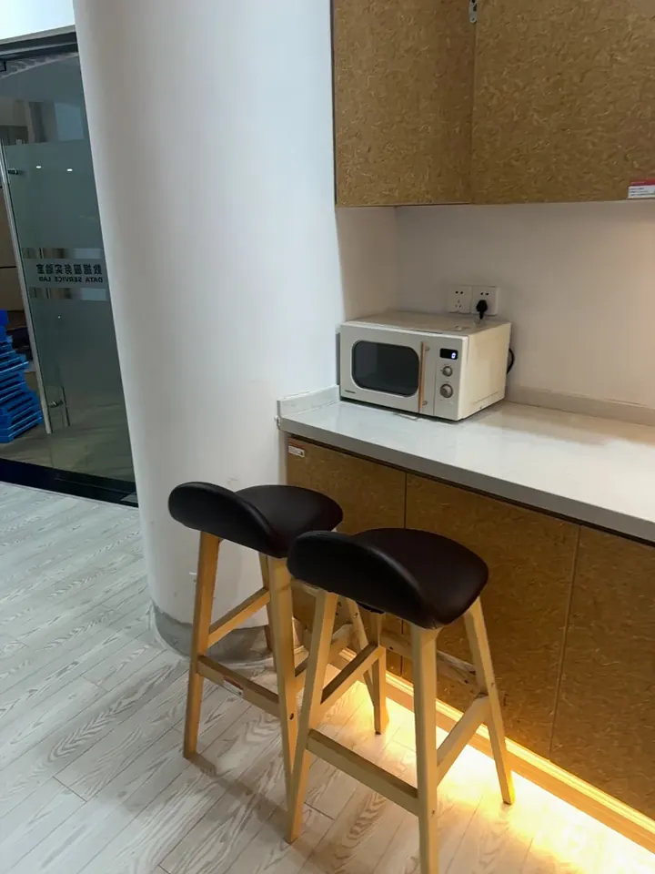
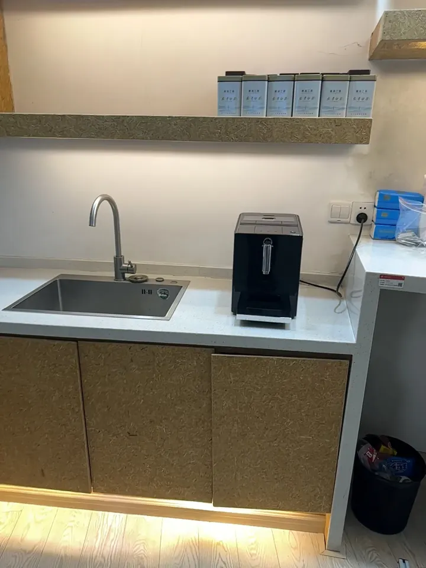
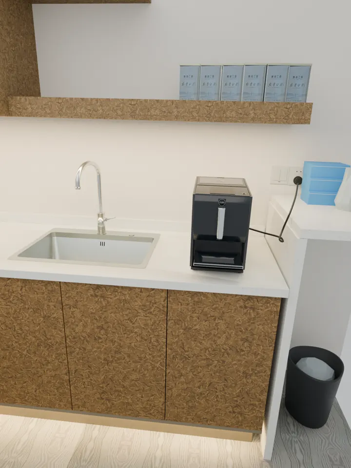
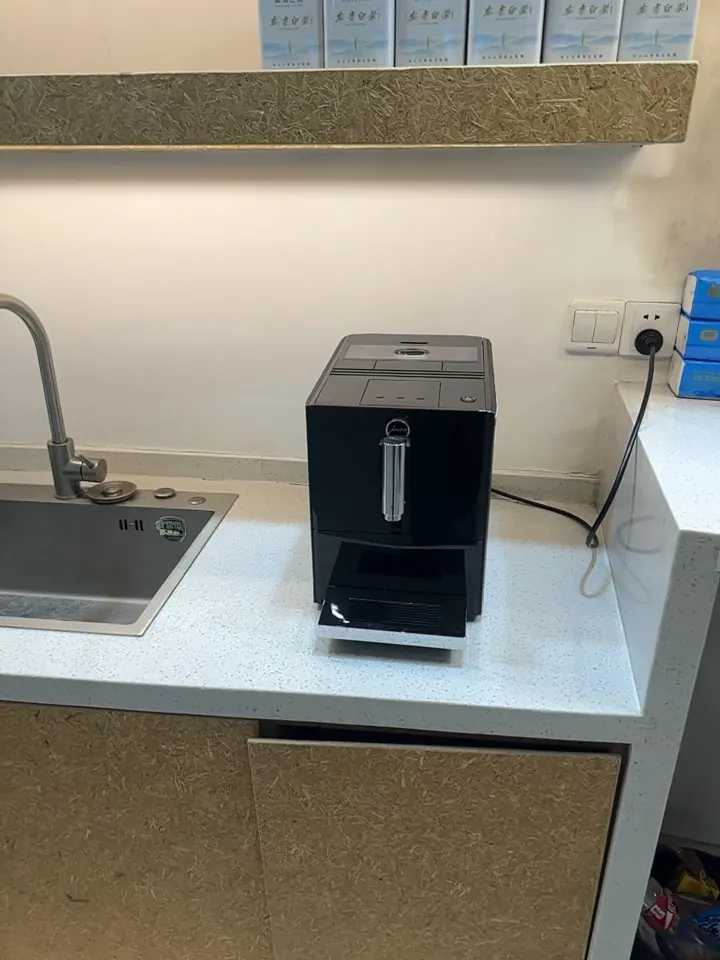
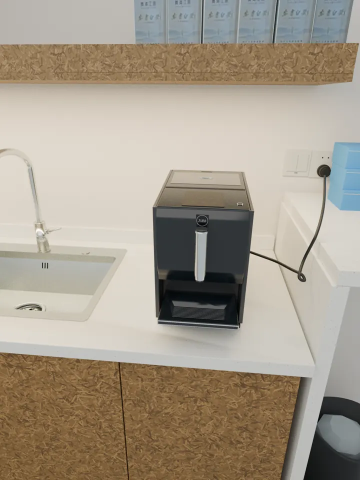
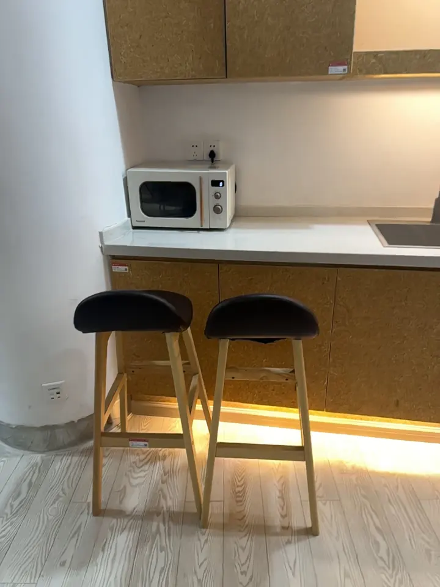
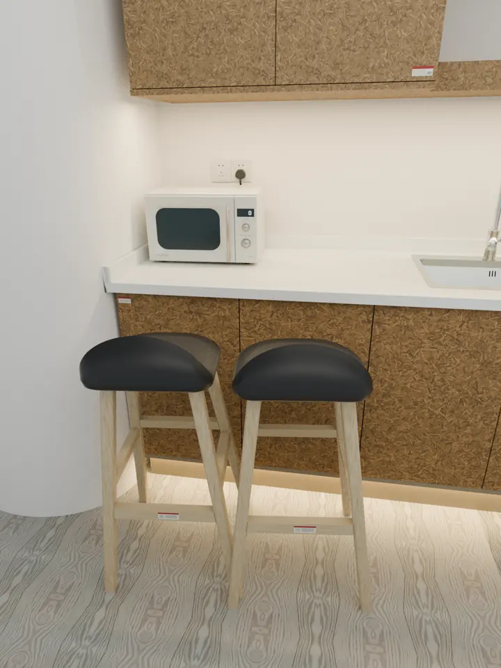
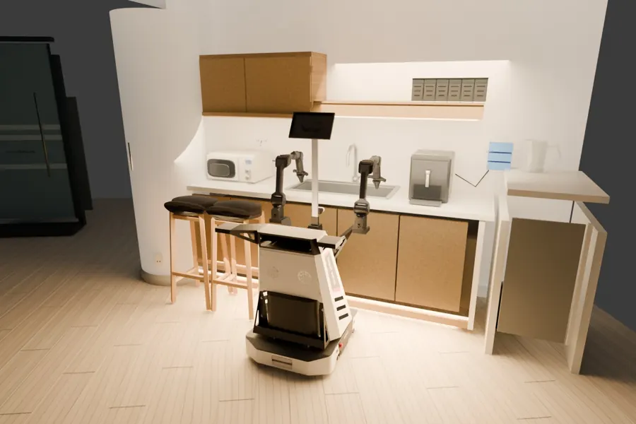
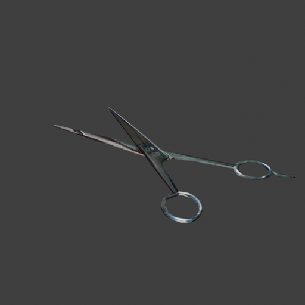

NeoWorld-3 · research
Worlds robots can use, not just look at.
NeoWorld-3 turns photos into simulation-ready 3D worlds. Coding agents write every object as a program, with parts, joints and limits.
Scene 01 · reconstructed coffee corner
move the pointer · scroll to turn
What it makes
A photo, a rebuilt world, and the code underneath.
Three layers of the same office coffee corner. On the left, the stabilised video. In the middle, the scene NeoWorld Studio rebuilt from it, rendered from the same camera. On the right, what the rebuilt scene really is: code.
The two pictures can look alike. The difference is underneath. Drag the </> divider and each object shows its own code, pinned above it as the camera moves: the operations and measurements from the scene's real construction record.
In The Matrix, Neo learns to see his world as code. This is the same idea, made literal.
Why it matters
Then a robot can practise there.
A phone scans a desk. NeoWorld-3 rebuilds it as a world a robot can use. A policy rehearses the task in that twin: put the bowl in the microwave. Then the real robot does the same thing on the real desk.
How it works
How the agent builds it.
One figure, taken apart step by step. Keep scrolling: the figure zooms to each stage as you read about it.
1 · Observe
Start from what a camera sees.
A handful of RGB-D photos of a real place, each with its camera position. Here: an office coffee corner.
2 · Write the scene as code
One agent owns the whole scene.
It looks, measures, and writes the scene as a program: boxes, cylinders and where they go. NeoMCP gives it tools to read, edit, measure and refine; NeoSDK does the geometry.
3 · Specialists for hard objects
Write, fit, compare, repeat.
An object that needs more care, like the coffee machine, goes to a specialist with its own photos. It writes a program for that one object, fits it, and compares real and rendered views from the same cameras until they agree.
4 · Checked before it is kept
Kept only if it is better.
Every returned change is tried in a copy of the scene and checked. If it does not improve the match, the scene stays exactly as it was. The next section shows six real examples.
5 · Matched to the photo
An editable scene that matches the photo.
The result is rendered from the same camera as the real photo. Whatever still differs goes back to the scene agent for another round.
6 · Joints
Parts that move get joints.
Joints are declared in the code, swept through their range to catch collisions, and exported for simulators. Axes and limits the photos cannot confirm stay marked as unresolved.
The whole loop
From photos to a world a robot can use.
Observe, build, check, refine, and hand the result to a robot, with feedback at every stage.
Real-to-sim reconstruction
Optional object specialists
Bounded object episodesOptional articulation
Declared motion only; unresolved axes and limits remain explicit.
Real observations


Multi-view RGB-D + cameras
Scene agent
Observe, measure, author
Revise the scene program
NeoMCP + NeoSDK
cube()translate()rotate()
Harness: evidence, budgets and admission
Real–Sim scene

Editable reconstructed scene
Object handoff


Views
Source
Context
Bound object evidence
Fixed cameras + neighbors
Refine object geometry
Fit against bound observations
Real–Sim feedback


Compare at matched cameras
Parent integration
Stage returned source
Check geometry and ownership
Retain or reject

Robot in reconstructed scene
Static placement visualization
Each worker edits its assigned object. Cameras and neighboring objects stay fixed.
Watch the agent work
Every change is tested. Bad ones are undone.
These are real programs the agent wrote while improving the kitchen above, in order. Each one looks before it touches, changes one thing, checks that nothing else moved, and keeps a way back. When a change makes things worse, it is rolled back exactly.
Six real edit programs from the agent's session on this kitchen, including a change it tried and then rolled back. Shown once the team agrees to publish them.
Look closer
The pieces, one at a time.
For readers who want the details: an object as code, how numbers get refined, the kitchen part by part, and ten articulated objects.
A world written as code
Keep the recipe, not just the cake.
Most 3D methods predict a finished surface in one step. NeoWorld-3 keeps something more useful: the program that builds the object. Change one number in it and every part that depends on that number follows.
P = (S, θ, T)
The result is exported as URDF, the standard file robots and simulators read: links, joints, axes and limits. Drag the divider over the chair below to look underneath its surface.
The joint text is read live from 100520.urdf. The limits are the real ones: the seat folds from 0° to −90°.
Reasoning meets gradients
The agent sketches. The optimiser measures.
Language models are good at structure (“a chair with four legs and a tilted back”) but poor at exact numbers. So NeoWorld-3 splits the work. The agent writes the program; an optimiser then tunes its named knobs until renders match the photos.
Because the optimiser moves a few meaningful knobs rather than thousands of points, one leg_length keeps all four legs equal.
A small illustration running in your browser: a search over 4 knobs against one silhouette, keeping a change only when the overlap clearly improves. It shows the idea; it is not a NeoWorld-3 run.
The kitchen, part by part
Explore the rebuilt kitchen.
Every part has a name, and every object has its own construction record. Hover to read names; switch to Code to read the record.
Articulated objects
Ten objects. Every joint explicit.
Each object below was rebuilt from a single image, shown on the left. Every moving part has a declared joint type, axis and range. Play the motion, colour the parts, or show the joint axes.

Scissors · 10449
Kinematic viewer: joints move within their URDF limits. It shows motion, not a physics simulation.
Looking ahead
If every real-world observation can become a world a robot can practise in, the physical world becomes trainable.